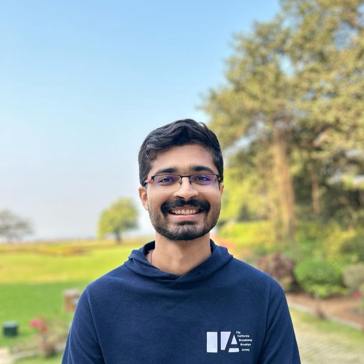

I am a 5th year Integrated PhD student in the School of Technology and Computer Science at Tata Institute of Fundamental Research (TIFR), advised by Mrinal Kumar. I am supported by TCS Research Scholar Program.
Here is a link to my CV.
Email: shanthanu.rai@tifr.res.in
I am broadly interested in Algebra and Computation, Computational Complexity, Algebraic Complexity and Error Correcting Codes. My current work is focused on algebraic and number theoretic questions in these areas.
I have volunteered for various science outreach activities at TIFR. Namely, I have volunteered in Frontiers of Scince and National Science Day programs. These programs aim to inspire students to pursue pure science as a vocation and showcases recent scientific advances to the general public.
Here are some games/demos I made for outreach (using help from LLMs):